Tutorials
Updated 03 Mar 2011
- QuArK Information Base
- 1. Introduction to QuArK
- 1.7. Texture-browser in QuArK
|
|
Tutorials
Updated 03 Mar 2011
|
Upper levels: - QuArK Information Base - 1. Introduction to QuArK - 1.7. Texture-browser in QuArK |
|
1.7.4. Tutorials |
[ - - ] |
The differences between importing and making links to textures for the Texture Browser are these: 1) Imports are actual copies of texture image files which make the .qrk file, where data is stored for both methods, much larger then just linking to them. However, the linking system has its bugs and those links can become broken or the files they link to may be moved, again braking the links. Therefore, importing copies is more reliable then making links. 2) On the other hand, if you are dealing with Shader or Material type image files using the linking method would be the preferred method just because of the fact that those files are not really image files, but are text files that point to the actual image files they relate to and interact with for the game. |
|
Index |
|
Texture Imports, how to create |
cdunde - 03 Mar 2011 | [ Top ] |
|
1) First, make sure that the textures you want to import, have been extracted from any game compressed files such as pak or zip files. Then in QuArK, open the texture-browser, and choose 'New main folder'. 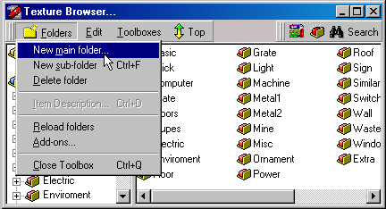 2) This will bring up a dialog-box where QuArK asks you, in what .QRK file you want to store the new texture-links. If you have the textures in a special game-directory, like a TC/PC/MOD, I suggest you choose the option 'In a new Add-on'. If you already have some custom textures from before, you can choose 'In an already registered Add-on', so you don't end up with multiple .QRK add-ons, but for this tutorial we will select the 'In a new Add-on'. 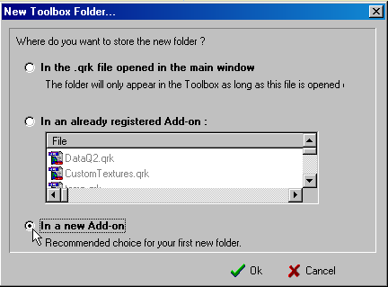 3) Now that you have selected 'In a new Add-on', QuArK will ask you to name the new .qrk file that will be created. Keep the file in your QuArK main directory, along with the other .QRK files, so you can always find it again. Also remember to save it before you uninstall QuArK for an updated version in the future. 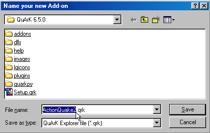 4) In the texture-browser tree-view, there will now be a new main folder, called 'New Folder'. 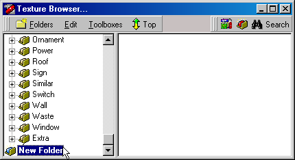 5) You can rename this folder (and others as well), by highlighting it and press the F2 key (just like in Windows' File-explorer) or just click twice on it. 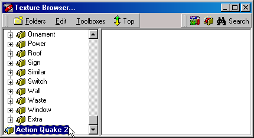 6) While still having selected the new main folder (now called 'Action Quake 2' for this example), click on 'Edit' in the menu-bar, go to 'Import files' then 'Import (copy) files...' and click on it. 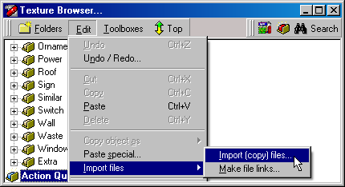 7) The file to import window will open. Use it to navigate to your texture locations and click on one you wish to import. You can only import one file at a time. If you have a lot of files and folders then you should try to use the Texture Linking method instead. 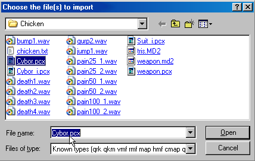 To keep things organized, it's a good idea to setup sub-folders before or as you import textures. The 'new sub-folder' can be found in the 'Folders' menu. When one is added it will show up in the Texture Browser tree-view as 'New Folder' but can be changed to any name you choose. Which ever folder is selected when you import a texture, that is the folder it will be placed into. You can also drag textures from folder to folder as you please. 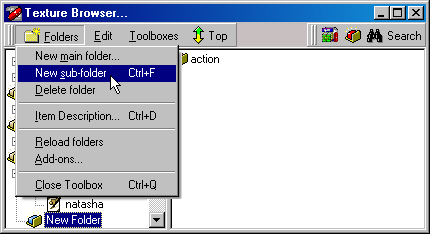 Once you have them arranged the way you want it's a good idea to make a 'new texture list' for each of the folders you have. This will cause all the textures in a particular folder to be displayed as thumbnails when the folder is selected. You create a 'new texture list' by selecting a folder with imported textures then click the 1st icon button in the right-most set of icons of the menu (if in doubt, always read the fly-over help). This will place another folder called 'Texture list' in that folder which you will rename to the same name of the folder it is in, ex: rename 'Texture list' to 'actionrally'. 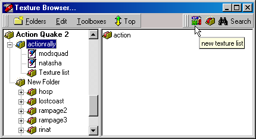 Now LMB drag all those textures into the NEW 'actionrally' folder, 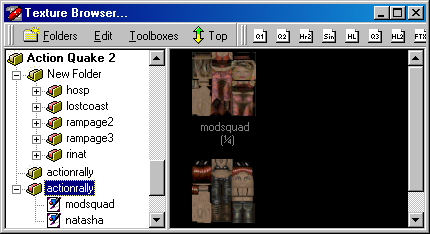 9) The final step is to close QuArK completely. As it shuts down you will see a message asking if you want to save the changes to your new addon .QRK file, click "yes". Restart QuArK and you will see the newly imported textures. If you look in QuArK's main folder you will also find your newly created textures .QRK file, which needs to stay where it is or you will break where QuArK expects it to be. Once again, remember to save it before you uninstall QuArK for an updated version in the future. You should be able to use the same Addon .QRK file in the new version. |
|
Texture Links, how to create |
Decker-cdunde - 02 Mar 2011 | [ Top ] |
|
1) First you make sure, that the custom textures you want to make links to, already exists in a game-directory. Then in QuArK, you go into the texture-browser, and choose 'New main folder'.
2) This will bring up a dialog-box where QuArK asks you, in what .QRK file you want to store the new texture-links. If you have the textures in a special game-directory, like a TC/PC/MOD, I suggest you choose the option 'In a new Add-on'. If you already have some custom textures from before, you can choose 'In an already registered Add-on', so you don't end up with multiple .QRK add-ons, but for this tutorial we will select the 'In a new Add-on'.
3) Now that you have selected 'In a new Add-on', QuArK will ask you to name the new .qrk file that will be created. Keep the file in your QuArK main directory, along with the other .QRK files, so you can always find it again. Also remember to save it before you uninstall QuArK for an updated version in the future.
4) In the texture-browser tree-view, there will now be a new main folder, called 'New Folder'.
5) You can rename this folder (and others as well), by highlighting it and press the F2 key (just like in Windows' File-explorer) or just click twice on it.
6) While still having selected the new main folder (now called 'Action Quake 2' for this example), click on the icon at the top, in the menu-bar, just to the left of the "Search" icon. The one where the fly-over help is 'make links for a folder of Quake 2 / Heretic II textures (.wal and .m8)' . This also works for creating Half-Life texture-links, but unfortunately not for Quake-1 (I don't know about Hexen-2, Sin and other games for sure.) 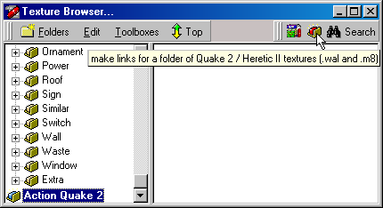 7) A click on the icon, brings the 'Texture File Finder...' dialog-box up. In this you select the game-directory where your custom textures are located. In this example, I'll choose to create texture links to whatever I have in my Action Quake 2 game-directory. If the game does not use shader textures then uncheck the "Shaderlist.txt" box. In the directory window above that, scroll down, select the MAIN folder where your textures are and click Ok. This will save the Main folder and all its sub-folders, along with their path names, in the new folder you crated at the start and you will now be able to view all those textures in the Texture Browser window to the right by just clicking on a sub-folder. 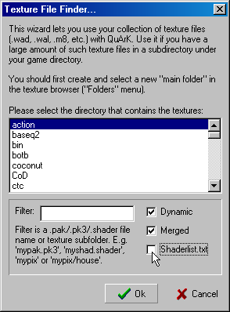 If you don't like the structure it has stored the texture links in, you can change it as you like, by moving the links into a different texture-list, or create new sub-folders which will contain texture-lists, etc. (almost just like Windows' File-explorer.) You create a 'new texture list' by using the 1st icon in the right-most set of icons of the menu (if in doubt, always read the fly-over help). The 'new sub-folder' can be found in the 'Folders' menu. 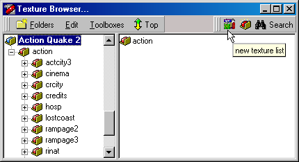 8) Once you saved the new .QRK file you have created in step 7 above and restart QuArK, it will also add a red icon to the editors tree view near the top where you can select any of those sub-folders to display a list of the textures in it unless they are in sub-folers already. We will cover how to fix that further down. 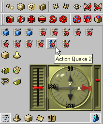 Remember to save your changes, before leaving QuArK completely! If you forget, all your work will vanish, because your newly created .QRK Add-on has not been saved properly. 9) Now, close QuArK completely. As it shuts down you will see a message asking if you want to save the changes to your new addon .QRK file, click "yes". Restart QuArK and you will see the newly added red icon described in step 8 above. But, unless your textures are in a single folder, there are still a few more steps to do before it will work properly.
10) Open the Texture Browser and click on the + sign next to the folder that contains all of your sub-folders. 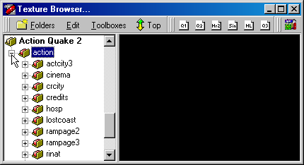 11) Select all the sub-folders by clicking on the first one and hold down the Shift key as you click on the last one. 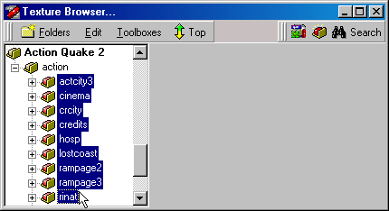 12) Now drag all of those folders into the Main folder above the one they are in now. Then RMB click on the folder that is now empty that you just took them out of and select ' Cut ' to delete it. 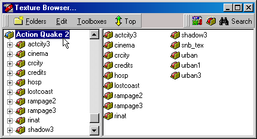 13) Once again, just like in step 9 above, close QuArK completely and click "Yes" to save your changes. 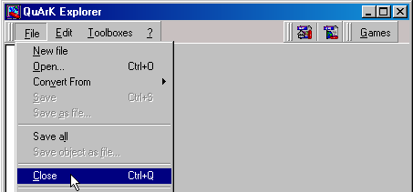 14) Reopen QuArK and the red icon will now list all of your sub-folders and the textures in each of them so when you select one to apply that texture, it will also give the sub-folder as part of its name. 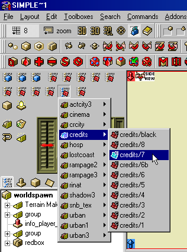 If you look in QuArK's main folder you will also find your newly created textures .QRK file, which needs to stay where it is or you will break the links. You will also notice that it is a very small file. That is because it only contains the main path to where you actually have your texture folders and files. Once again, remember to save it before you uninstall QuArK for an updated version in the future. You should be able to use the same Addon .QRK file in the new version. |
|
Copyright (c) 2009, GNU General Public License by The QuArK (Quake Army Knife) Community - http://quark.sourceforge.net/ |
[ - Top - ] |